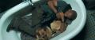

Nem, a cím
nem rám utal, bár egyszer talán idővel rólam is forgatnak filmet ilyen címmel. Ez a film most
látható a magyarországi mozikban, és előrebocsátom, egy ritka kiváló sci-fit láthat, aki beül rá.
Feltéve persze, hogy előtte gyorsan lecsapkodja az ostoba plázaközönséget, de erről
később.
2011-et írunk. Három évvel ezelőtt egy reggeli tévéműsorban boldogan jelentette be
egy tudós, hogy sikerült megtalálni a rák ellenszerét egy genetikailag módosított vírus formájában.
Aztán kihalt az emberiség. New Yorkban egyetlen ember maradt, Robert Neville, az USA hadseregének
orvos alezredese, aki maga sem tudja, miért immúnis a vírusra, és vele Sam, a német juhász kutya.
Együtt vadászgatnak a várost lassan felverő bozótban a csapatokban szaladgáló szarvasokra, esténként
DVD-ket néznek, és éjszaka vastag páncélzsalukkal fedik az összes nyílászárót. Miért? Mert az
utolsó ember nincs egyedül.
Nem is mondok el többet, mert ennek a filmnek épp az a lényege,
hogy lassan, fokozatosan derül ki, hogyan néptelenedett el a világ, mi történt Robert Neville-lel,
hogyan került hozzá Sam, és miért alszik ruhástul, fegyverrel a kézben a fürdőkádban. Az is
kiderül, vannak-e még emberek.
Will Smith
színészi teljesítménye csúcsára ér ezzel a filmmel. Végre kapott egy szerepet, amelyben nem csak a
laza, nagyszájú fekát alakíthatja. Az eredmény összehasonlítható Tom Hanks alakításával a
Castaway-ben. A film látványvilága hátborzongató. A halott New
York szinte életre kel, ha szabad ilyen képzavarral élnem. Ugyan ilyet már a hetvenes évekbeli
katasztrófafilmekben is lehetett látni, de azokon nem lehetett azt érezni, amit az
I am Legend-ben, hogy ebben tudniillik benne vagyunk, és nem csak
egy makettet mutogat a kamera. Hiába, a komputeranimáció csodálatos dolog. Az Egyesült Államokban
egyébként IMAX változatban is megtekinthető a film, a totális döbbenetre vágyóknak. Nálunk marad a
sima mozi.
Jó tanács: ha tehetjük, ne moziban nézzük meg, hanem klubvetítésen vagy otthon,
házimozin. A primitív plázaközönség nem érti a filmet, és mivel nincsenek benne egyértelmű, sablonos
párbeszédek, sem azonnal érthető jelenetek ("jön a szörny, majdnem megharapja, de pont lelövi, és
mond valami lazát"), ezért a mögöttünk ülő, ostoba picsák végig fogják kérdezgetni a mellettük ülő
aput, hogy most mi történik/nem történik, illetve ugyanezen apuk hosszas, tudálékos
magyarázgatással töltik el a film jó részét, anyunak történő villantás céljából. Én a mögöttem ülő
droidot akkor ütöttem le kis híján, amikor feltűnt a kikötőben álló USS Intrepid múzeumhajó, mire
magyarázni kezdte anyunak, hogy azok ott "a világ első sugárhajtású repülői" kiállítva. A környező
seggfejek humorosnak szánt kommentálása szintén agyonvágja a filmélményt, és sajnos egyenként kell
nekik beígérni a pofont, mert mindegyik azt hiszi, hogy az előző felszólítás rá nem
vonatkozik.
A film egyetlen rossz pontot kap, de azt nagyon: a történet ellenére,
csakazértis van benne polkorrektség-lecke. A hajamat lerakom, komolyan. Ebbe a történetbe aztán
tényleg fontos volt betenni egy két perces monológot a gyűlöletkeltésről és a nagyszerű
emberekről, akik szembeszálltak vele. Nekifutásból kellene fejberúgni azt a barmot, aki erre
utasította a forgatókönyvírót. Oké, hogy a főszereplő fekete, de nem erről szól a film. Ennek
ellenére kötelező darab minden kultúrember DVD-gyűjteményében. Mivel állatkísérletek bizonyítják,
hogy az
I am Legend-et a közönségnek csak egy kis része
képes értékelni, valószínűleg hamarosan felfedezhető lesz az elektronikai áruházakban, a
leértékelt DVD-k között. Nekünk egyébként erről a polcról származik a gyűjteményünk oroszlánrésze.
Turkálni érdemes.